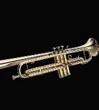
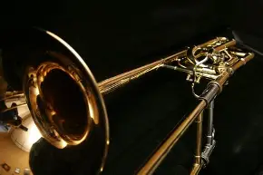
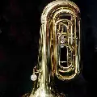
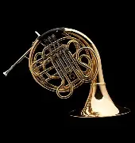

Trompeta

Sonido brillante y potente. Muy utilizada en jazz, música clásica y bandas.
Trombón

Sonido profundo y cálido. Se distingue por su vara deslizante.
Tuba

El instrumento más grave de la familia. Base armónica en orquestas y bandas.
Corno Francés

Sonido suave y redondo. Fundamental en música clásica y cinematográfica.
Bombardino / Euphonium
Sonido dulce y expresivo. Muy usado en bandas sinfónicas.